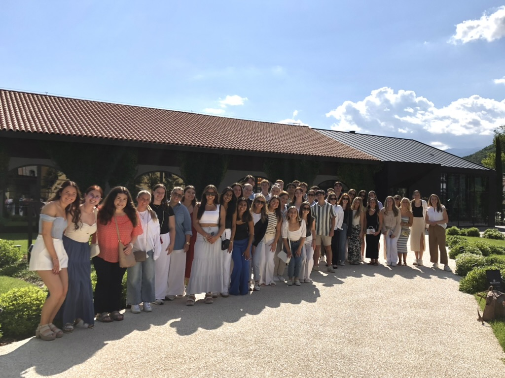

Marketing Professor · Researcher · Strategist
Passionate about purpose-driven business.
Creatively illuminating insights to provoke conversation & change — because business, done with purpose, is one of the most powerful forces for good we have.

About
I study consumer culture not from the outside, but from within it — as a former retail executive, a marketing professor, a community member, and a mother. That inside-outside perspective is what I bring to every classroom, every research question, and every conversation.
Before academia, I spent ten years inside three of America's most influential retail organizations — Walmart, Target, and Hallmark — working across consumer insights, brand management, product development, merchandising, and competitive positioning. I left that world with deep conviction that the way we consume shapes who we become, and that business has a genuine role to play in bending that arc toward something better.
My research sits at the intersection of consumer culture, well-being, and the social forces that shape how people buy, assign meaning, and resist the pressures of modern market life. I'm particularly interested in how consumers push back against dominant cultural scripts around time, productivity, and accumulation, and what that resistance reveals about what people actually value. My teaching brings that research alive for students learning to lead with purpose in a complicated commercial world.
I believe the most powerful insights are the ones that connect disparate dots — showing how a global force manifests in a local moment, how a business decision ripples into a cultural one. That's the work I'm here to do.